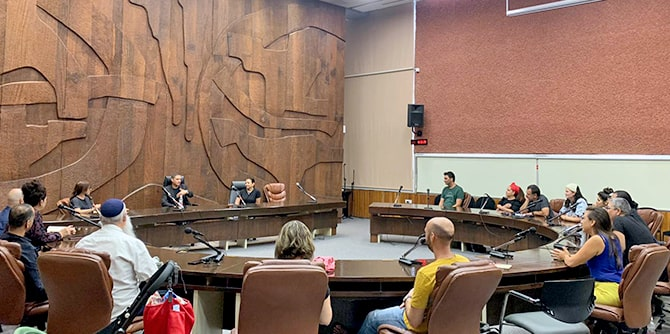

Toward the end of their studies in the program, the fellows of Cohort 4 of the Mandel Program for Regional Leadership in Beer Sheva met with
Ruvik Danilovich, mayor of Beer Sheva, in the city council's chamber. At this specially convened meeting, the mayor asked to hear about the fellows’ ideas and initiatives, and his interest and attentiveness demonstrated his very real commitment to the program and its goals.
The program’s fellows presented themselves, their visions, and their projects. As the extent of the potential contribution of their initiatives to Beer Sheva and the Negev became clear, Mayor Danilovich became increasingly impressed and excited. This, he explained, was because many of the initiatives directly address areas of concern to all the region’s inhabitants.
Thus, for example, an initiative to enable early childhood development centers to expand the scope of their work and screen toddlers who are not enrolled in educational institutions, represents a unique combination of professionalization and social solidarity. Similarly, an initiative to bring together school students, college students, and elderly people in the neighborhoods in which they live and study demonstrates that sometimes the solutions to complex problems such as loneliness and alienation can be found close to home, and simply require taking a fresh look at the situation.
Even when the discussion raised issues that challenge current methods and practices of the leaders of local authorities, Mayor Danilovich displayed great support for the initiatives of the fellows. These included a project that seeks to encourage public participation in decision-making and to change the nature of the dialogue between residents and officials, so that the voices of those who tend not to be involved in public affairs can be heard. Additional projects have been developed to address barriers to political participation in local authorities, and even to create a national professional forum for a new local government position of “external relations manager.”
In response to these presentations, the mayor spoke warmly of the friendship and partnership between the Mandel Foundation and the city of Beer Sheva. He concluded the meeting by saying to the fellows: “How fortunate am I, Beer Sheva, and the Negev to have allies such as you.”
{kind=link}
{kind=link}